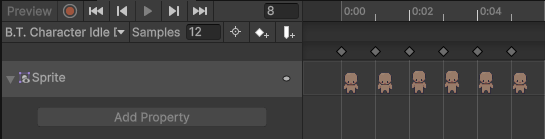

Character Preview Controller
The Character Preview Controller is the Animator Controller used to animate the character within the Character Creation Menu.
It is specifcally designed for use with the Character Preview module.
The controller is assigned in the Layered Character Type under the Character Creator Setting section.
UI Animation Requirement
The Character Preview is rendered using a UI Image component, not a Sprite Renderer.
When creating animations in Unity, the animated property is tied to the component type used at the time of recording.
If an animation was created using a Sprite Renderer, it will only affect Sprite Renderer components.
As a result, using those animations in UI (which uses an Image) will not work.

Requirements
- Animations must target an
Imagecomponent. - Animations that only target a
Sprite Rendererwill not function in the Character Creation Menu.
Options
- Create a new set of animations targeting an
Imagecomponent. - Modify existing animation to also animate an
Imagecomponent.
Animator Controller Setup Requirements
If the Character Preview does not use Rotation or Animation Controls:
- There are no strict setup requirements.
- The default animation will play automatically at runtime.
If using additional features:
- Rotation Controls > see Rotation Controls.
- Animation Controls > Animations are played directly by name, so state transitions should not be included.
Rotation Controls
Rotation Controls allow the character to change the direction they're facing direction using buttons.
When implemented, the Animator Controller requires one parameter:
Type: Float
Name: Direction
Direction Values
| Value | Direction |
|---|---|
| 0 | Forward |
| 1 | Backward |
| 2 | Left |
| 3 | Right |
The value of this paramter is updated at runtime when rotation buttons are pressed.
It's used by the Animator to determine which directional animation should be played.
Recommended Setup (Blend Trees)
Blend Trees are the recommended approach for handling directional animations.
They allow a single animation state (such as Idle or Walk) to automatically switch between directions based on the Direction paramter.
Concept
Instead of creating separate states like:
- Idle_Forward
- Idle_Backward
- Idle_Left
- Idle_Right
A Blend Tree combines all of these into a single state:
- Idle (Blend Tree)
The Animator then selects the correct animation based on the Direction value.
Step 1: Create Blend Tree State
- Open the Animator Controller
- Create a new state (e.g.
Idle). - Create new Blend Tree:
Right click> Create State > From New Blend Tree. - Give the Blend Tree a name (e.g.
Idle).
Step 2: Configure Blend Tree
- Set Blend Type:
1D. - Set Parameter:
Direction.
Step 3: Add Motions
Add four motions to the Blend Tree:
| Motion | Threshold |
|---|---|
| Idle_Forward | 0 |
| Idle_Backward | 1 |
| Idle_Left | 2 |
| Idle_Right | 3 |
Each motion is a separate animation clip.
The Threshold defines which value of the Direction paramter will trigger that animation.
How It Works
At runtime:
- The
Character Preview Handlerupdates the Direction paramter. - The Blend Tree evaluates its thresholds.
- The matching directional animation is played.
Example:
Direction = 2 > plays Idle_Left.
Extending to Multiple Animations
This structure can be reused for additional animations.
For example:
- Idle
- Walk
- Run
If you have Animation Controls setup they can call these other Blend Trees, when called they will play the correct directional animation depending on the value of Direction.